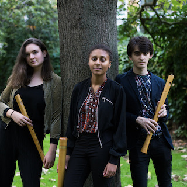

First documented by the Roman author Pliny the Elder, the mythical Parandrus became renowned in medieval bestiaries for its chameleon-like versatility. With repertoire spanning from the 12th Century to new commissions, the Parandrus ensemble similarly finds itself at home on both old and new terrains.
The Chineke! Foundation was established in 2015 by Chi-chi Nwanoku with the ambition of championing change and celebrating diversity in classical music. An Associate Orchestra of the Southbank Centre since its launch concert at the Queen Elizabeth Hall, the Chineke! Orchestra has since broken new ground in the UK and internationally. In 2019 the foundation was the recipient of the inaugural RPS Gamechanger Award.
Initially created in response to the lockdown caused by the COVID-19 pandemic, Bandwidth began in 2020 under the direction of composer Freddie Meyers. Dedicated to producing real-time music online, the ensemble embraces the high-latency environment of the internet. Rather than seeking to replicate the experience of communicating in live performance, Bandwidth uses online platforms to actively explore new ways of listening and responding.